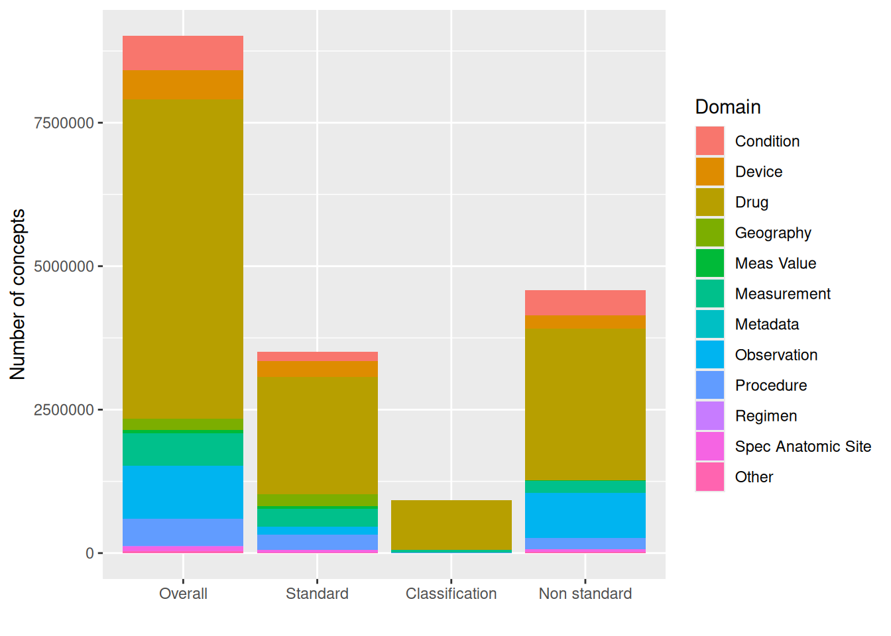
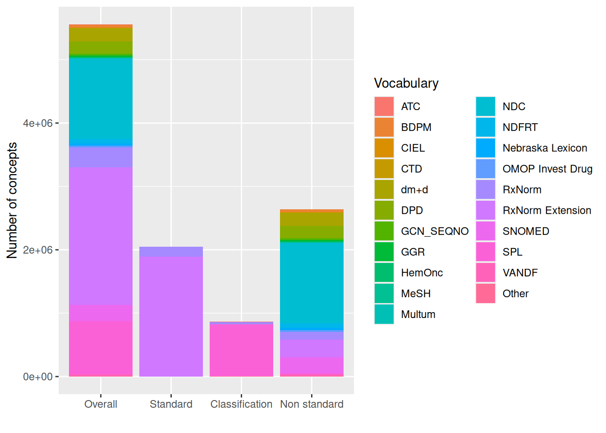
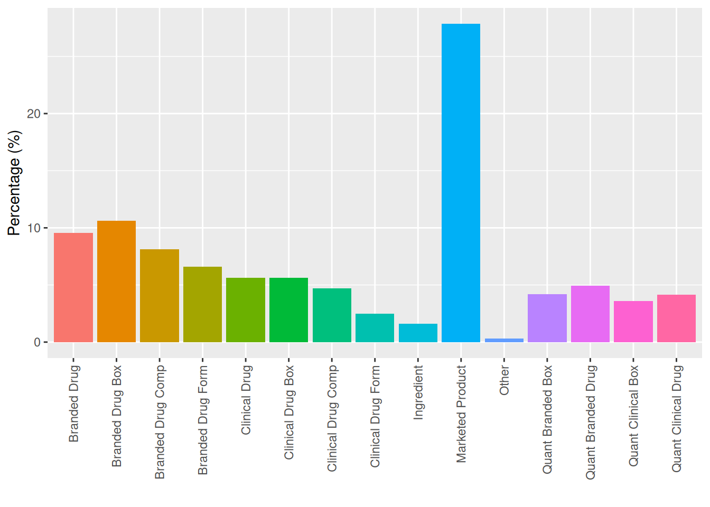
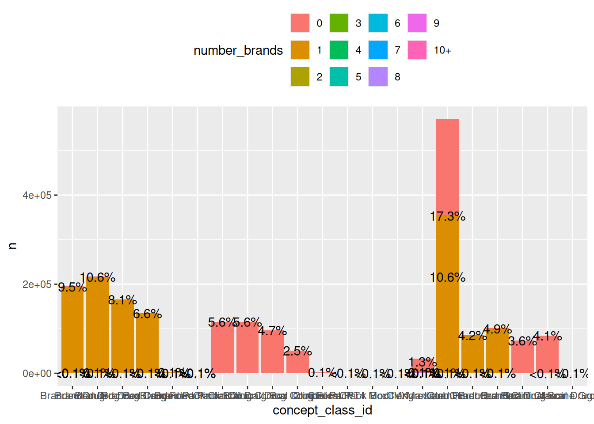
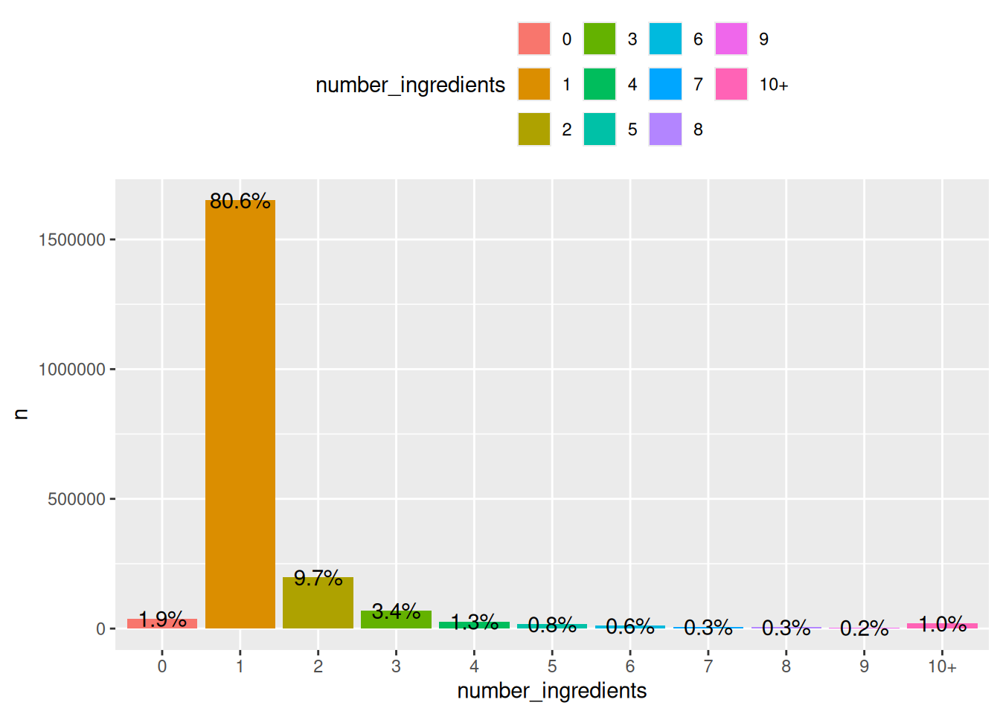

library(omock)
library(duckdb)
library(dplyr)
library(ggplot2)
cdm <- mockCdmFromDataset(datasetName = "delphi-100k_5.4", source = "duckdb")2 Drug data in the OMOP CDM
In this chapter the organisation
2.1 The Drug exposure table
The OMOP CDM is a domain organised Common Data Model. Clinical data (events) are recorded into different Clinical tables depending on its domain: for example, drugs records (Drug domain) are recorded in the Drug Exposure table or condition records (Condition domain).
The Drug Exposure table has 23 columns, each row meaning a different record. Above a brief description of the different fields.
drug_exposure_idUnique surrogate key for each drug record.- person_id Identifier for the patient for whom the drug exposure is recorded (foreign key to the person table).
drug_concept_idIdentifier for the drug code, it must be a standard concept in the Drug domain. When a source drug record cannot be mapped, set this field to0. The concept with the most detailed content is preferred. Concept classes are considered in the following order of precedence: Marketed Product > Branded Pack / Clinical Pack > Branded Drug / Clinical Drug > Branded Drug Component / Clinical Drug Component > Branded Drug Form / Clinical Drug Form > Ingredient.drug_exposure_start_dateThe date the drug exposure began. Valid entries include the date a prescription was written, the date it was dispensed, or the date a drug administration was recorded. It can not be missing.drug_exposure_start_datetimeOptional datetime precision for the start. This field is not used for the analyses described in this book.drug_exposure_end_dateThe date the drug exposure end. This date must be determined at the ETL stage. In the analyses described in this book if missing it is assumed to be the same than the start date.drug_exposure_end_datetimeOptional datetime precision for the end. This field is not used for the analyses described in this book.verbatim_end_dateThe end date exactly as it appears in the source data (e.g. a discontinuation date), without any imputation. This field is not used for the analyses described in this book.drug_type_concept_idDescribes the provenance of the exposure record — for example, whether it is a prescription written, a prescription dispensed, a drug administered by a provider, or a patient-reported exposure. Use this field to filter to specific exposure types in analyses. See accepted Type Concepts and the OHDSI vocabulary wiki for descriptions.stop_reasonThe reason a person stopped a medication as it appears in the source (e.g. “regimen completed”, “changed”, “removed”). Often not populated. This field will be retired in CDM v6.0.refillsIntended refills at the time a prescription was written. Only relevant for records sourced from written prescriptions.quantityThe amount of drug dispensed or administered.days_supplyThe number of days of supply as recorded in the source prescription or dispensing record. This reflects the prescribed supply and may differ from the actual exposure duration. Leave empty if not verbatim in the source — do not calculate from other fields. Negative values are invalid and should lead to the record being dropped or investigated. Values exceeding 365 days warrant review.sigThe verbatim prescription instructions as written by the provider (Latin abbreviations or plain text as found in the source).route_concept_idStandard concept representing the route of administration (e.g. oral, intravenous, topical). See accepted Route concepts.lot_numberThe manufacturer’s lot or batch number for the drug product, if available. Particularly relevant for vaccines and biologics.provider_idThe provider associated with the drug record (e.g. the prescriber or the administering clinician). The ETL must determine which provider to record when multiple providers are involved (e.g. ordering vs. administering physician).visit_occurrence_idLinks the exposure to the visit during which the drug was prescribed, administered, or dispensed. Drug exposures must be explicitly associated with a visit in the source data to populate this field.visit_detail_idLinks to a more granular visit record inVISIT_DETAIL, if available. For example, if a drug was administered during an ICU stay within a broader inpatient visit,visit_occurrence_idwould reference the full hospital stay andvisit_detail_idwould reference the ICU stay.drug_source_valueThe verbatim code or text from the source system (e.g. an NDC, Gemscript, or BNF code). Retained for traceability; not intended for primary analysis.drug_source_concept_idThe concept ID representing the source value, if the source uses an OMOP-supported vocabulary (e.g. RxNorm, dm+d). This field is discouraged for analysis — preferdrug_concept_idfor network studies.route_source_valueThe verbatim route value from the source data. This is mapped toroute_concept_idfor standardisation; retained here for reference.dose_unit_source_valueThe verbatim unit of dose from the source data. This is a legacy field scheduled for deprecation in a future CDM version. It is included for backward compatibility but is not recommended for analysis.
As a summary the most important field that are used in the subsequent analysis are: person_id, drug_concept_id, drug_exposure_start_date, drug_exposure_end_date and quantity with: drug_type_concept_id and drug_source_concept_id that might be used at the cohort creation stage.
2.2 Standard and Source fields
Every clinical entity in OMOP CDM is captured at two levels: the standard concept (drug_concept_id in the case of drug records) and the original source representation (drug_source_value and drug_source_concept_id in the case of drug records). Analyses (in general) will always rely on standard concepts so definitions are generalisable across different OMOP CDM instances.
To show some numbers we will explore the 27th August 2025 vocabulary version using the delphi-100k dataset.
Loading required package: DBI[1] 0Note: method with signature 'DBIConnection#Id' chosen for function 'dbExistsTable',
target signature 'duckdb_connection#Id'.
"duckdb_connection#ANY" would also be validcdm── # OMOP CDM reference (duckdb) of Delphi-2M ──────────────────────────────────• omop tables: care_site, cdm_source, cohort_definition, concept,
concept_ancestor, concept_class, concept_relationship, concept_synonym,
condition_era, condition_occurrence, cost, death, device_exposure, domain,
dose_era, drug_era, drug_exposure, drug_strength, fact_relationship, location,
measurement, metadata, note, note_nlp, observation, observation_period,
payer_plan_period, person, procedure_occurrence, provider, relationship,
source_to_concept_map, specimen, visit_detail, visit_occurrence, vocabulary• cohort tables: -• achilles tables: -• other tables: -Drug concepts are 61.6% of the total 9,018,807 concepts. In particular when referring to only Standard concepts (3,513,741) the percentage is slightly reduced to 58.3%. The Drug domain is the one containing more concepts in the OMOP CDM.
Show code
x <- cdm$concept |>
mutate(standard_concept = case_when(
standard_concept == "S" ~ "Standard",
standard_concept == "C" ~ "Classification",
.default = "Non standard"
)) |>
group_by(standard_concept, domain_id) |>
tally() |>
collect() |>
mutate(domain_id = if_else(n < 5000, "Other", domain_id)) |>
group_by(standard_concept, domain_id) |>
summarise(n = sum(n), .groups = "drop")
xOverall <- x |>
group_by(domain_id) |>
summarise(n = sum(n), .groups = "drop") |>
mutate(standard_concept = "Overall")
sc <- c("Overall", "Standard", "Classification", "Non standard")
domains <- sort(unique(x$domain_id))
domains <- c(domains[domains != "Other"], "Other")
x <- union_all(x, xOverall) |>
mutate(
standard_concept = factor(standard_concept, sc),
domain = factor(domain_id, domains)
)
ggplot(data = x, mapping = aes(x = standard_concept, y = n, fill = domain)) +
geom_col() +
labs(x = "", y = "Number of concepts", fill = "Domain")
Standard vs. source fields.
2.3 Vocabularies
Show code
x <- cdm$concept |>
filter(domain_id == "Drug") |>
mutate(standard_concept = case_when(
standard_concept == "S" ~ "Standard",
standard_concept == "C" ~ "Classification",
.default = "Non standard"
)) |>
group_by(standard_concept, vocabulary_id) |>
tally() |>
collect() |>
mutate(vocabulary_id = if_else(n < 5000, "Other", vocabulary_id)) |>
group_by(standard_concept, vocabulary_id) |>
summarise(n = sum(n), .groups = "drop")
xOverall <- x |>
group_by(vocabulary_id) |>
summarise(n = sum(n), .groups = "drop") |>
mutate(standard_concept = "Overall")
sc <- c("Overall", "Standard", "Classification", "Non standard")
vocabs <- sort(unique(x$vocabulary_id))
vocabs <- c(vocabs[vocabs != "Other"], "Other")
x <- union_all(x, xOverall) |>
mutate(
standard_concept = factor(standard_concept, sc),
vocabulary = factor(vocabulary_id, vocabs)
)
ggplot(data = x, mapping = aes(x = standard_concept, y = n, fill = vocabulary)) +
geom_col() +
labs(x = "", y = "Number of concepts", fill = "Vocabulary")
2.4 Concept granularly
Concept granularity. Drug concepts exist at multiple levels of granularity in the RxNorm/RxNorm Extension hierarchy, from ingredient level up to marketed product. The ETL should map to the most detailed concept available from the source data.
x <- cdm$concept |>
filter(domain_id == "Drug", standard_concept == "S") |>
group_by(concept_class_id) |>
tally() |>
collect() |>
mutate(concept_class_id = if_else(n < 5000, "Other", concept_class_id)) |>
group_by(concept_class_id) |>
summarise(n = sum(n), .groups = "drop") |>
mutate(n = 100 * n / sum(n))
ggplot(data = x, mapping = aes(x = concept_class_id, y = n, fill = concept_class_id)) +
geom_col() +
labs(y = "Percentage (%)", x = "") +
theme(
legend.position = "none",
axis.text.x = element_text(angle = 90, vjust = 0.5, hjust = 1)
)
2.5 Brand
From the concept id we can deduce the brand of the product
x <- cdm$concept |>
filter(domain_id == "Drug", standard_concept == "S") |>
inner_join(
cdm$concept_relationship |>
filter(relationship_id == "Has brand name") |>
rename("concept_id" = "concept_id_1"),
by = "concept_id"
) |>
group_by(concept_id) |>
summarise(n = n_distinct(concept_id_2)) |>
right_join(
cdm$concept |>
filter(domain_id == "Drug", standard_concept == "S"),
by = "concept_id"
) |>
mutate(number_brands = coalesce(n, 0)) |>
mutate(number_brands = if_else(
number_brands < 10, as.character(as.integer(number_brands)), "10+"
)) |>
group_by(number_brands, concept_class_id) |>
tally() |>
collect() |>
mutate(
number_brands = factor(
number_brands, c("0", "1", "2", "3", "4", "5", "6", "7", "8", "9", "10+")
),
percentage = sprintf("%.1f", 100 * n / sum(n)),
percentage = if_else(percentage == "0.0", "<0.1%", paste0(percentage, "%"))
)
ggplot(data = x, mapping = aes(x = concept_class_id, y = n, fill = number_brands, label = percentage)) +
geom_col() +
theme(legend.position = "top") +
geom_text()
For example we can quickly search for the different COVID-19 vaccines and see which are the different brands and number of concepts associated.
x <- cdm$concept_ancestor |>
filter(ancestor_concept_id == 954935) |>
select("vaccine_concept_id" = "descendant_concept_id") |>
inner_join(
cdm$concept_relationship |>
filter(relationship_id == "Has brand name") |>
select(
"vaccine_concept_id" = "concept_id_1",
"brand_concept_id" = "concept_id_2"
),
by = "vaccine_concept_id"
) |>
inner_join(
cdm$concept |>
filter(domain_id == "Drug", standard_concept == "S") |>
select("vaccine_concept_id" = "concept_id"),
by = "vaccine_concept_id"
) |>
inner_join(
cdm$concept |>
select("brand_concept_id" = "concept_id", "brand" = "concept_name"),
by = "brand_concept_id"
) |>
group_by(brand) |>
tally() |>
collect()2.6 Ingredients
There are 33,218 standard ingredients in this version of vocabularies.
x <- cdm$concept |>
filter(domain_id == "Drug", standard_concept == "S") |>
inner_join(
cdm$concept_ancestor |>
inner_join(
cdm$concept |>
filter(concept_class_id == "Ingredient", standard_concept == "S") |>
select("ancestor_concept_id" = "concept_id"),
by = "ancestor_concept_id"
) |>
select("concept_id" = "descendant_concept_id", "ancestor_concept_id"),
by = "concept_id"
) |>
group_by(concept_id) |>
summarise(n = n_distinct(ancestor_concept_id)) |>
right_join(
cdm$concept |>
filter(domain_id == "Drug", standard_concept == "S"),
by = "concept_id"
) |>
mutate(number_ingredients = coalesce(n, 0)) |>
mutate(number_ingredients = if_else(
number_ingredients < 10, as.character(as.integer(number_ingredients)), "10+"
)) |>
group_by(number_ingredients) |>
tally() |>
collect() |>
mutate(
number_ingredients = factor(
number_ingredients, c("0", "1", "2", "3", "4", "5", "6", "7", "8", "9", "10+")
),
percentage = sprintf("%.1f", 100 * n / sum(n)),
percentage = if_else(percentage == "0.0", "<0.1%", paste0(percentage, "%"))
)
ggplot(data = x, mapping = aes(x = number_ingredients, y = n, fill = number_ingredients, label = percentage)) +
geom_col() +
theme(legend.position = "top") +
geom_text()
2.7 Daily dose
2.8 Combination products
Combination products. A single source code representing a combination product may map to multiple standard concept IDs (one per ingredient). In such cases, multiple DRUG_EXPOSURE rows should be created, one per standard concept.
2.9 Routes and drug forms
dose form is only available with RxNorm
There is a minority of concepts (6926, 0.3%) has associated 2 dose forms, most of this records come from an overlap between Injectable Solution, Ijection and Intravenous solution, but this is a minority and in general records will only have one dose (or none) associated.
In Figure XX we can see the distribution of dose forms
x <- drugs |>
left_join(
cdm$concept_relationship |>
filter(relationship_id == "RxNorm has dose form") |>
rename("concept_id" = "concept_id_1"),
by = "concept_id"
) |>
PatientProfiles::addConceptName(column = "concept_id_2", nameStyle = "") |>
group_by(concept_id) |>
summarise(n = n_distinct(concept_id_2)) |>
right_join(drugs, by = "concept_id") |>
mutate(number_dose_form = coalesce(n, 0)) |>
mutate(number_dose_form = if_else(
number_dose_form < 10, as.character(as.integer(number_dose_form)), "10+"
)) |>
group_by(number_dose_form) |>
tally() |>
collect() |>
mutate(
number_dose_form = factor(
number_dose_form, c("0", "1", "2", "3", "4", "5", "6", "7", "8", "9", "10+")
),
percentage = sprintf("%.1f", 100 * n / sum(n)),
percentage = if_else(percentage == "0.0", "<0.1%", paste0(percentage, "%"))
)
drugs |>
inner_join(
cdm$concept_relationship |>
filter(relationship_id == "RxNorm has dose form") |>
rename("concept_id" = "concept_id_1"),
by = "concept_id"
) |>
group_by(concept_id) |>
filter(n_distinct(concept_id_2) == 2) |>
select("concept_id", "concept_id_2") |>
PatientProfiles::addConceptName(column = "concept_id_2", nameStyle = "route") |>
select(!"concept_id_2") |>
collect() |>
arrange(concept_id, route) |>
mutate(id = paste0("route_", row_number())) |>
tidyr::pivot_wider(names_from = "id", values_from = "route") |>
mutate(route = paste0(route_1, "; ", route_2)) |>
group_by(route) |>
tally()
ggplot(data = x, mapping = aes(x = number_dose_form, y = n, fill = number_dose_form, label = percentage)) +
geom_col() +
theme(legend.position = "top") +
geom_text()number of route categories
2.10 Drug eras
Drug Eras. The DRUG_EXPOSURE table stores individual exposure events. The derived DRUG_ERA table (built post-ETL) collapses these into continuous exposure periods per ingredient, accounting for permissible gaps, and is often more suitable for some summary statistics.
You can build the Drug Era using the OmopConstructor R package.
library(OmopConstructor)
cdm <- buildDrugEra(cdm = cdm)